Overview
The To Do screen is a personal task management utility. It allows you to create, track, and manage work-related activities like follow-ups, meetings, or lead conversions, with optional reminders and deadlines in place to help you organize your daily workflow.
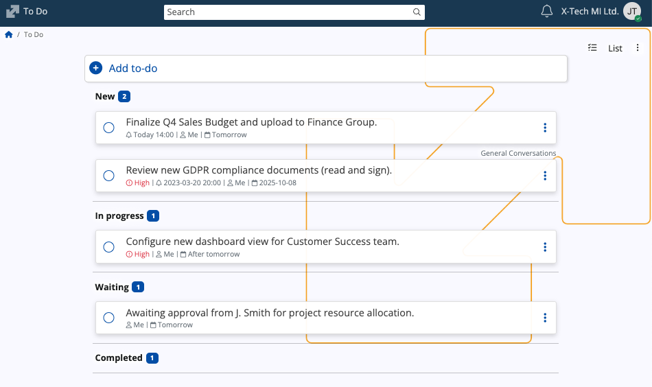
Interface
States
A task can be in one of the following states:
| State | Purpose |
|---|---|
| New | The default state for a newly created task. |
| In progress | Indicates active work is being performed on the task. |
| Waiting | Used when the task is currently blocked or awaiting action. |
| Completed | The final state, indicating the task is finished. |
Views
Tasks can be displayed in two primary formats, selectable via the view chooser in the top-right corner.
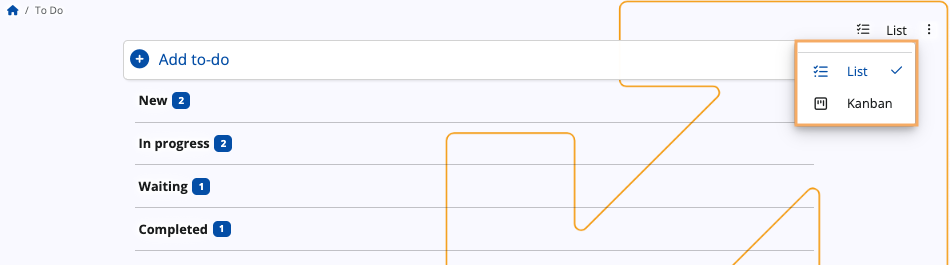
List
List is the default view of the To Do screen, providing a linear and categorized breakdown of all tasks.
In this view, tasks are automatically grouped under headings corresponding to their current state.
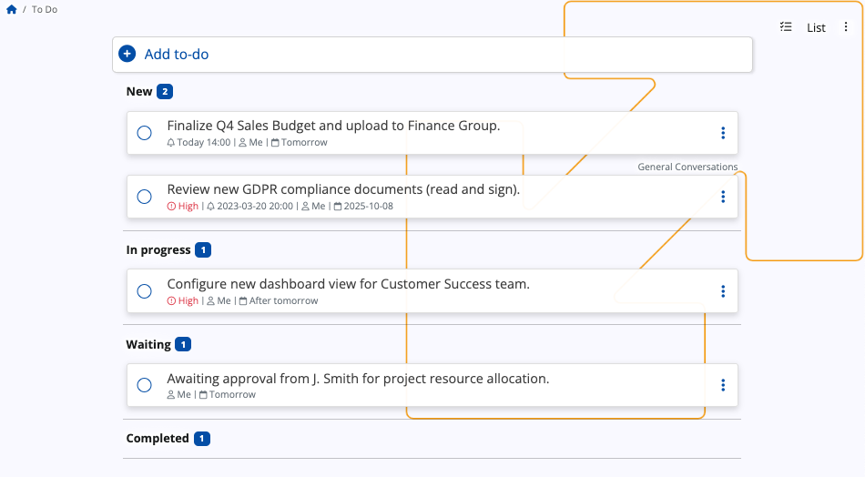
Each task entry displays the following information:
- A circular radio button used for quick completion of the task
- The primary task description
- Scheduling details, including the assigned user, reminder time (if set), and the due date
- The name of the group, if the task is associated with one
- A three-dot action menu for further task management
Kanban
The Kanban view transforms the To Do screen into a dynamic visual board for managing the task flow.
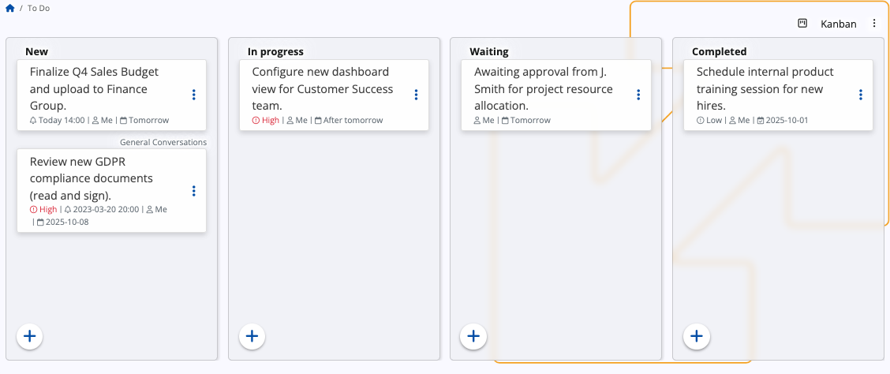
Key differences from List view:
- Tasks are displayed as cards organized into vertical columns. Each column header corresponds to a task's state.
- You can drag and drop task cards between the columns, which automatically updates the task's state.
- A + button can be found at the bottom of each column, allowing newly created tasks to be automatically grouped into a specific state.
Add a task
List
In List view, tasks are added using the + Add to-do bar at the top of the screen.
When you click on it, it will expand with several fields:
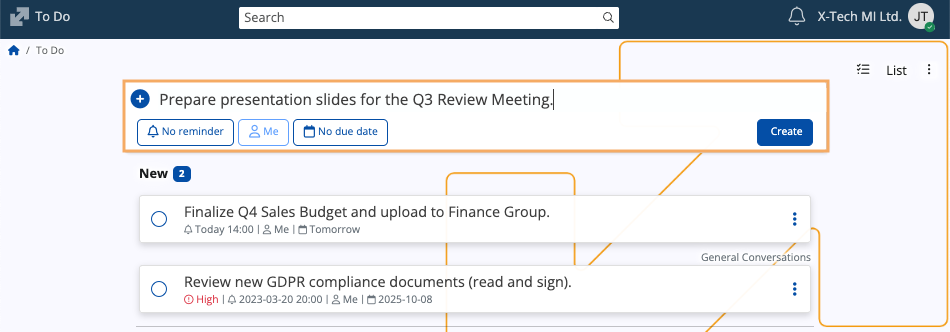
Enter a task description in the input field. This is the only required step.
Optionally configure:
Reminder: Sets a specific time for a notification. You can use one of the templates:
Late afternoon
Dinner
Tomorrow
Next Monday
Set custom time - Allows you to set a specific reminder date and time via the built-in mini calendar.
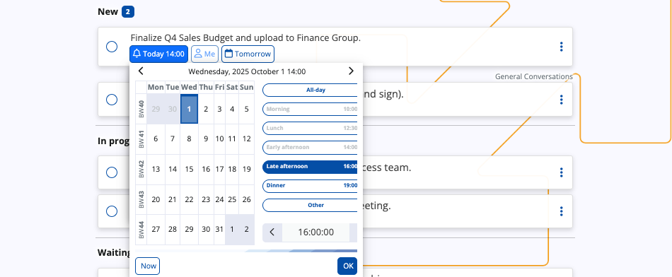
Assignee: By default, the task is assigned to the you, but you can assign it to someone else in your organization.
Due Date: Sets a deadline for the task. You can use one of the templates:
Today
Tomorrow
After tomorrow
Next week
Set custom date - Allows you to set a specific deadline date via the built-in mini calendar.
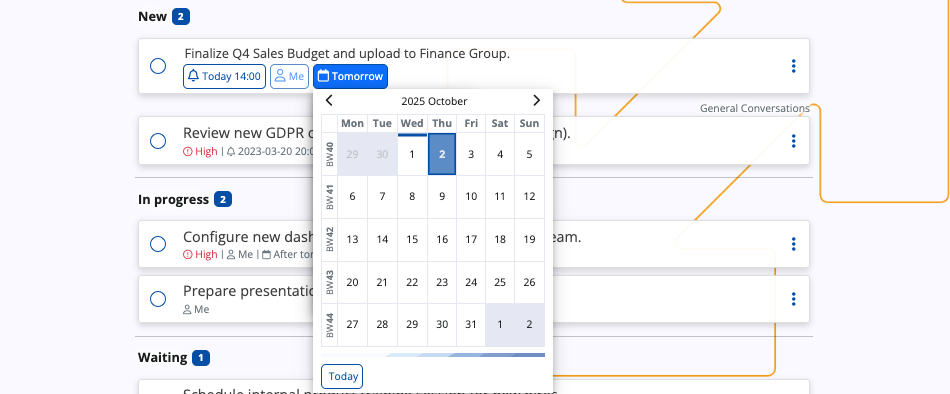
Click the Create button. This will move the task into the New category.
Kanban
In Kanban view, tasks are created directly within the columns, allowing them to be categorized immediately by their State.
Click the + button located at the bottom of the column corresponding to the desired initial state.
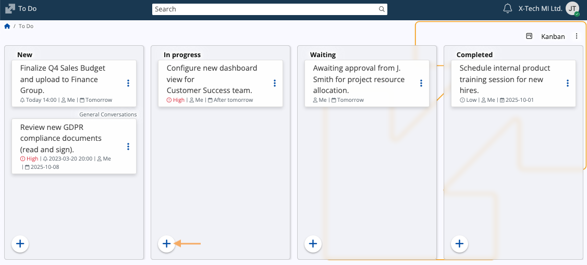
A dialog box will appear, requiring you to enter the Title of the task. You may also enter optional Notes.
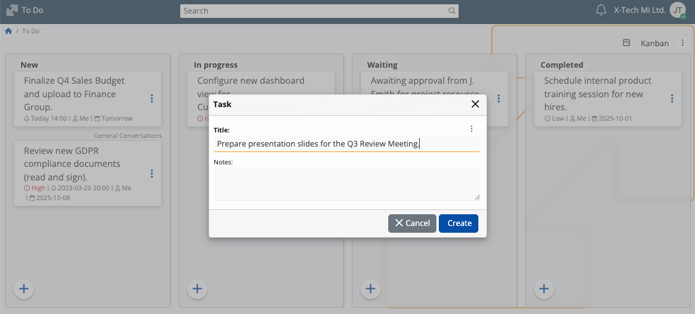
Click the Create button. This will add the task card to the column.
To define optional properties such as Reminder or Due Date, you must access the task's three-dot action menu and select the Edit option.
Actions
In both List and Kanban view, the three-dot action menu on the right side of a task provides further management options.
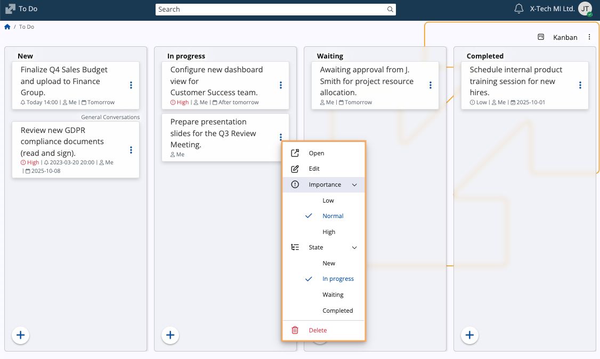
| Action | Purpose |
|---|---|
| Open | Opens a window for changing the title and notes (if any) of the task. |
| Edit | Allows for changes of the task description, reminder, assignee, and due date. |
| Importance | Sets the priority level of the task. Options include Low, Normal, and High. |
| State | Manually changes the task's status. |
| Delete | Permanently removes the task from the To Do list. |
Complete a task
A task can be marked as complete in three ways:
Quick completion: In List view, click the circular radio button to the left of the task description.
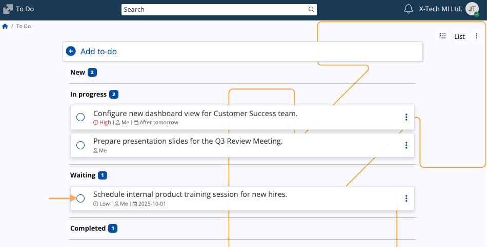
State change: In both List and Kanban view, select Completed from the State sub-menu within the action menu.
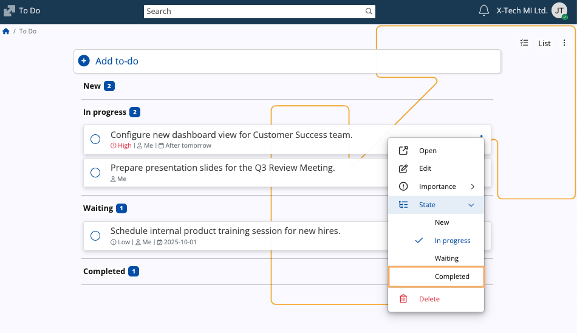
Drag and drop: In Kanban view, drag any task from any state and drop it into the Completed column.
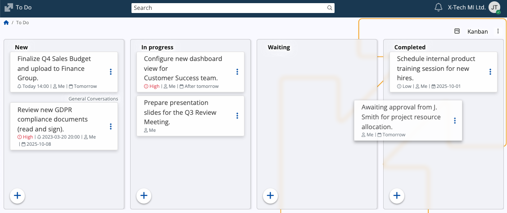
Completed tasks are automatically moved to the Completed category.
Note
The screenshots taken for this article are from v.26 of the platform.